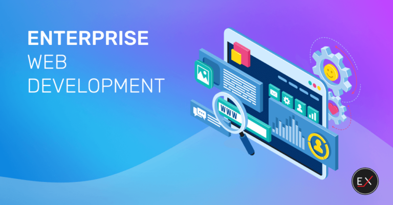

Enterprise development
Enterprise development refers to the process of growing and expanding a business organization with the aim of increasing its productivity, profitability, and competitiveness in the market. This typically involves strategic planning, resource allocation, and implementation of initiatives to foster growth and sustainability. Enterprise development encompasses various aspects such as
- Strategic Planning:Developing long-term goals and objectives, as well as devising strategies to achieve them. This includes market analysis, competitor assessment, and identifying opportunities for growth
- Resource Management:Efficiently managing human, financial, and technological resources to support business operations and growth initiatives.
- Innovation: Encouraging innovation and creativity within the organization to develop new products, services, or processes that can enhance competitiveness and meet evolving customer needs.
switch to google
